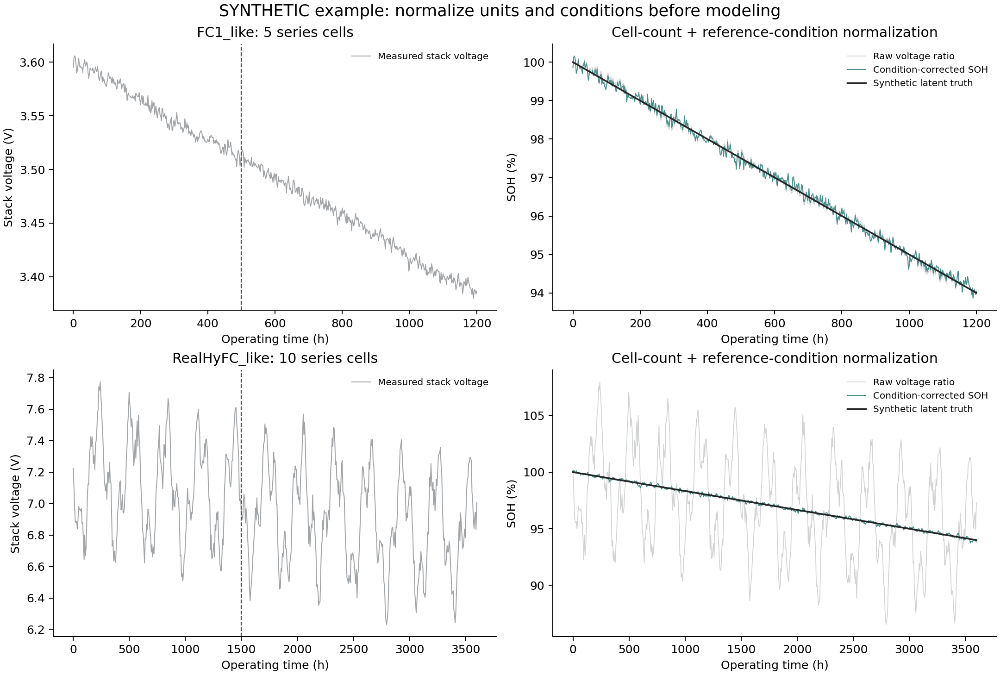
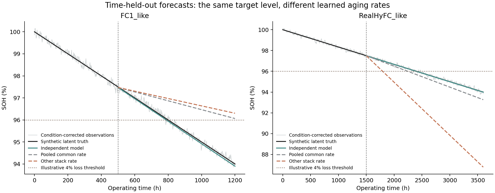
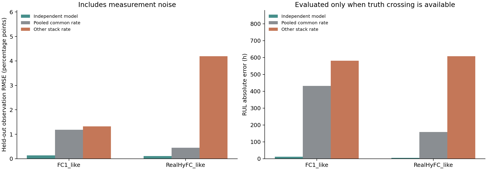

SYNTHETIC DATA · REPRODUCIBLE DEMO
燃料电池健康评估与预测：运行结果
demo3_independent_stack_models
这是模拟数据演示。图、CSV 和指标来自已执行的代码；不代表 FC1 或 RealHyFC 实测性能。重新运行模型后，执行 python build_report.py 可刷新此报告。
结果图



本次运行说明
Demo 3：分别建模的运行结果
本文件由 run_demo.py 根据本次运行的实际输出生成。所有随包数据均为固定种子的模拟数据。
主要结果
SOH RMSE 的单位为百分点（原始 SOH 比例乘 100）；RUL 单位为小时。
| 电堆情景 | 方法 | 持出观测 RMSE / 百分点 | 潜态 RMSE / 百分点 | 预测 RUL / h | 真实 RUL / h | RUL 绝对误差 / h |
|---|---|---|---|---|---|---|
| FC1_like | independent | 0.1345 | 0.0664 | 288.6491 | 300.0000 | 11.3509 |
| FC1_like | pooled_common_rate | 1.1829 | 1.1861 | 731.4767 | 300.0000 | 431.4767 |
| FC1_like | cross_stack_rate | 1.3213 | 1.3251 | 881.7856 | 300.0000 | 581.7856 |
| RealHyFC_like | independent | 0.1147 | 0.0101 | 894.3997 | 900.0000 | 5.6003 |
| RealHyFC_like | pooled_common_rate | 0.4474 | 0.4267 | 741.9405 | 900.0000 | 158.0595 |
| RealHyFC_like | cross_stack_rate | 4.1874 | 4.1798 | 292.7783 | 900.0000 | 607.2217 |
怎样解释
- 这些数字验证程序在给定合成情景中的行为，不能作为 FC1 或 RealHyFC 真实数据的实验结论。
- 分别建模只使用对应电堆截点之前的数据。两个迁移/共享对照在起点采用与独立模型完全相同的目标堆健康水平，仅替换衰减斜率。
- 真实 SOH 的下降速率在模拟中固定为 3∶1；独立模型已匹配模拟器的线性形式，因此此例没有验证复杂非线性老化的建模能力。
- 电池数归一化、工况修正改善可比性；它们不会使不同电堆的衰减速度相等。
- 0.96 SOH 表示相对参考电压下降 4%，是本次演示阈值；不是电压只剩 4%，也不是通用报废标准。
- RUL 以各自训练截点为起点。在未来观测未覆盖阈值时，真 RUL 记为右删失，绝对误差保持空值；没有 truth 时只跳过真值评价。
- 拟合状态与 RUL 都使用同一参考工况电压口径；不能把此预测直接作为变载下最低瞬时运行电压的到达时间。
检查结果
future_observation_perturbation_invariance：PASSindependent_model_no_other_stack_training：PASStransfer_baseline_responds_to_source_change：PASStruth_only_evaluation_does_not_mutate_forecasts：PASSsimulation_truth_parameters_do_not_enter_estimation：PASSrul_units_flat_case_and_censoring：PASSseries_cell_count_scale_invariance：PASSnonincreasing_predicted_health：PASS
阈值到达记录
{
"FC1_like": {
"status": "observed_in_truth",
"crossing_h": 800.0,
"rul_h": 300.0,
"rul_lower_bound_h": null
},
"RealHyFC_like": {
"status": "observed_in_truth",
"crossing_h": 2400.0,
"rul_h": 900.0,
"rul_lower_bound_h": null
}
}
文件索引
metrics.csv/metrics.json：各方法误差与 RUL。fitted_models.json：训练范围、估计斜率、预测起点。*_standardized.csv：单位与参考工况换算结果。*_predictions.csv：严格持出段的预测；truth 列仅为事后评价追加。01_units_and_conditions.png：电堆电压与标准化健康量。02_forecast_comparison.png：分别建模、共享斜率和直接迁移对照。03_metrics.png：误差对照。checks.json：自动检查。RUN_LOG.txt/environment.json：运行日志与实际软件版本。
指标与事件记录
保留 CSV 原字段与精度；横向滚动可查看完整列。
metrics.csv
| stack | method | test_n | train_end_h | soh_at_origin | fitted_soh_loss_rate_per_h | test_observation_rmse_soh | test_latent_rmse_soh | predicted_rul_h | true_rul_h | truth_crossing_status | rul_signed_error_h | rul_absolute_error_h |
|---|---|---|---|---|---|---|---|---|---|---|---|---|
| FC1_like | independent | 350 | 500 | 0.974727949667 | 5.10237102452e-05 | 0.00134467834265 | 0.0006643972252 | 288.64913187 | 300 | observed_in_truth | -11.3508681299 | 11.3508681299 |
| FC1_like | pooled_common_rate | 350 | 500 | 0.974727949667 | 2.0134544671e-05 | 0.0118289009572 | 0.0118608474392 | 731.476668963 | 300 | observed_in_truth | 431.476668963 | 431.476668963 |
| FC1_like | cross_stack_rate | 350 | 500 | 0.974727949667 | 1.67024151628e-05 | 0.0132133033776 | 0.0132508165481 | 881.785629414 | 300 | observed_in_truth | 581.785629414 | 581.785629414 |
| RealHyFC_like | independent | 350 | 1500 | 0.974938634771 | 1.67024151628e-05 | 0.00114742720656 | 0.000101352390077 | 894.399679654 | 900 | observed_in_truth | -5.60032034606 | 5.60032034606 |
| RealHyFC_like | pooled_common_rate | 350 | 1500 | 0.974938634771 | 2.0134544671e-05 | 0.00447375194409 | 0.00426687895587 | 741.940531317 | 900 | observed_in_truth | -158.059468683 | 158.059468683 |
| RealHyFC_like | cross_stack_rate | 350 | 1500 | 0.974938634771 | 5.10237102452e-05 | 0.0418737408335 | 0.0417981461197 | 292.778292666 | 900 | observed_in_truth | -607.221707334 | 607.221707334 |
全部结果文件


HTML 生成时间：2026-10-29 16:04（北京时间）。页面不需要联网，结果图可点击打开原图。